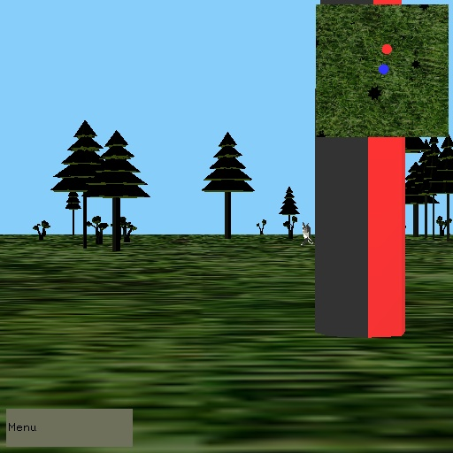

COS 426, Spring 2013
Ameera Abdelaziz, aabdelaz
Colin McNally, cmcnally
Connie Wan, cwan
Michael Newman, menewman
List of Implemented Features
We believe that we have implemented the following features:
- Basic Features
- 3D Perspective Viewing and Objects
- Lighting and Smooth Shading
- User Input
- Computer Control
- Advanced Features
- Texture Mapping
- Multiple Views
- On-Screen Control Panel
- View Frustum Culling
- Procedural and Physically-Based Modeling
- Collision Detection
- Simulated Dynamics
- Sound
Demonstration of Implemented Features
3D Perspective Viewing and Objects, Lighting/Smooth Shading, and User Input

In our game, the player is a bear wandering around in a 3D forest. Our primary light source is the sun, which is modeled by a directional light. The user is able to control the bear's movement in first person. The WASD keys move the bear forward, left, backward, and right. Q and E rotate the bear left or right respectively. R is used to attack and kill the prey if it is close enough. The image above demonstrateds 3D perspective, 3D objects, lighting/shading, and basic user input.
Computer Control


There are two objects under computer control. One is the hunter, represented by the red tower, who generally approaches the player but remains at a safe distance. The other is the prey, which hops away from the player if the player comes too close. Both ignore the player if the player is far enough away from them.
Texture Mapping
We mapped textures to the tree bark, tree tops, and ground. These can be seen in the images above.c
Multiple Views
Our game features a minimap in the top right corner. It is a top-down orthographic view of the field, centered on the player. It displays important features such as hunters and prey as large colored icons for easy visibility. All other features of the scene are displayed normally. The minimap is implemented with the help of the GLEW library, using framebuffers to render a view to a texture, then rendering the texture onto an on-screen panel.
On-Screen Control Panel
The on-screen control panel displays the bear's health when
the player clicks on it, as well as an exit button, clicking upon
which causes the game to quit.
View Frustum Culling
This entails finding the six planes that define the viewing
frustrum, then checking the bounding boxes of all the nodes to see
if the object falls completely outside the viewing frustrum, in
which case, we do not draw it. This has no image because it's impossible to see if it's working correctly, but its correctness can be verified in the code and by a slight slowdown in framerate if the player turns towards a bunch of objects that were previously just out of view.
Procedural and Physically-Based Modeling

Description here
Collision Detection
Description here
Simulated Dynamics


Dynamics are used to simulate the bear's jumping and subsequent falling. When the player jumps, an upward velocity is applied; there is also a constant gravitational force downward. Position/velocity are calculated each timestep with Euler integration.
When the player is close to the rabbit they can press R to swipe at the rabbit. Swiping will kill the rabbit and send it flying in the air, and the dead rabbit then bounces around using simulated physics (again, Euler integration).
Sound
Sound is implemented using the OpenAL library (with ALUT). There are two main sources of sound: the ambient forest sounds throughout the game, and the approaching sound of a hunter (the beginning of Holst's Mars). The listener is always at the player's position, and the hunter sound is triggered when a hunter approaches within a certain distance of the player.
Hunter
Ambient
Sources and Credit
Internal Sources
- We cannibalized portions of particleview.cpp from assignment 4.
External Sources
- We used the GLEW library for the minimap. In particular, this tutorial was very helpful.
- We used the OpenAL library for sound. In particular, this tutorial was helpful (although we also used ALUT).
- The specific sounds we used were nature sounds from here, and the beginning of Holst's Mars.
- The formulae for view frustrum culling came from here.